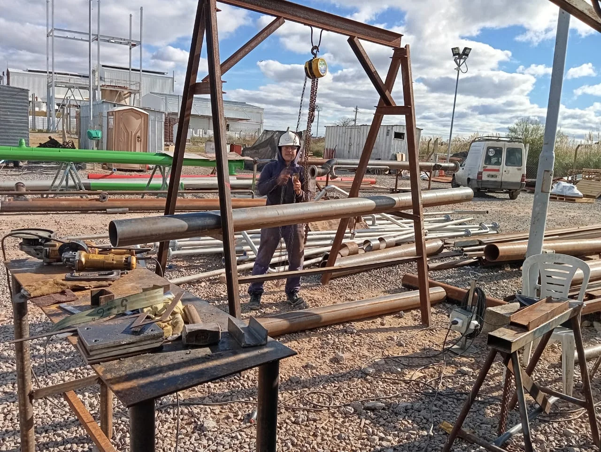

Trabajos realizados
Piping sanitario ejecutado en planta

Línea de piping sanitario AISI 316L — Industria Alimenticia

Cañerías de vapor de alta y baja presión

Instalación de caudalímetros en proceso

Equipamiento integral para líneas de producción